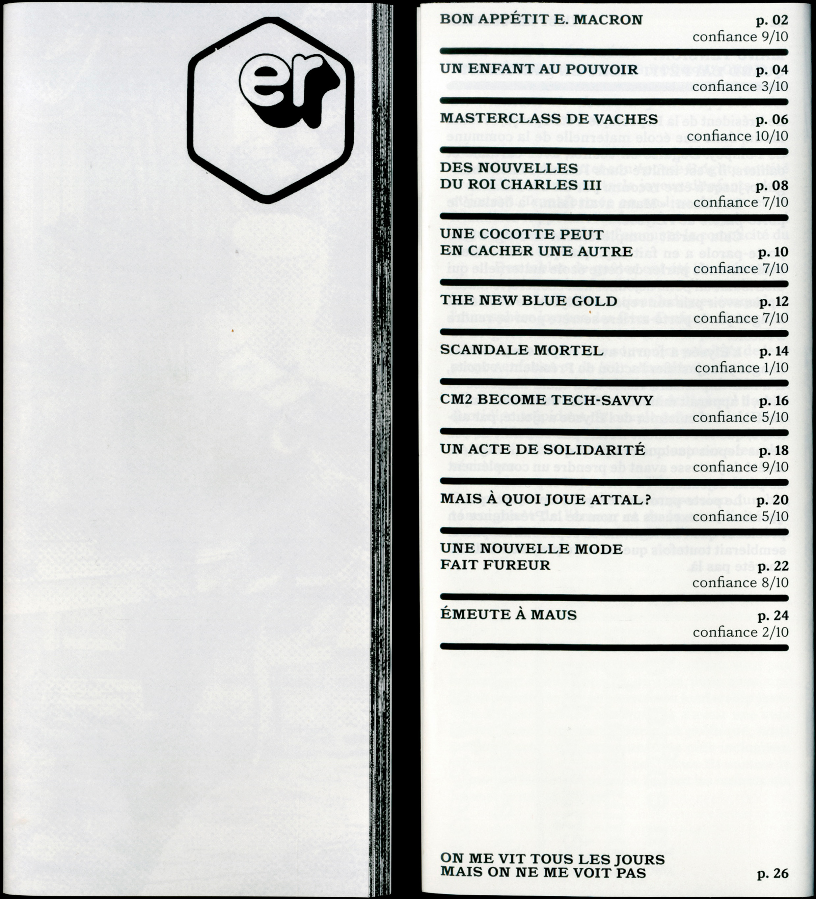
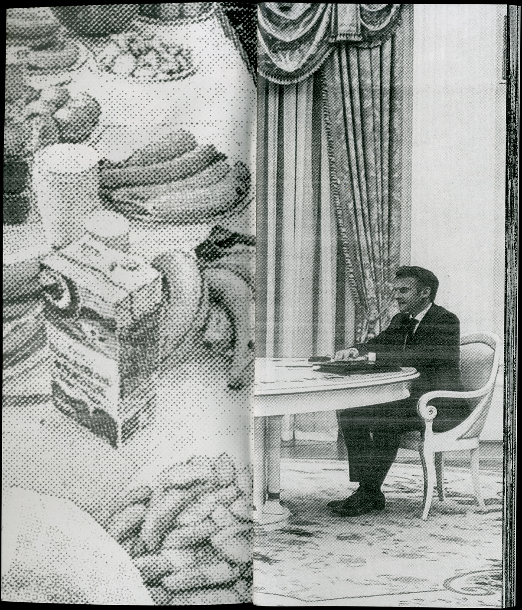
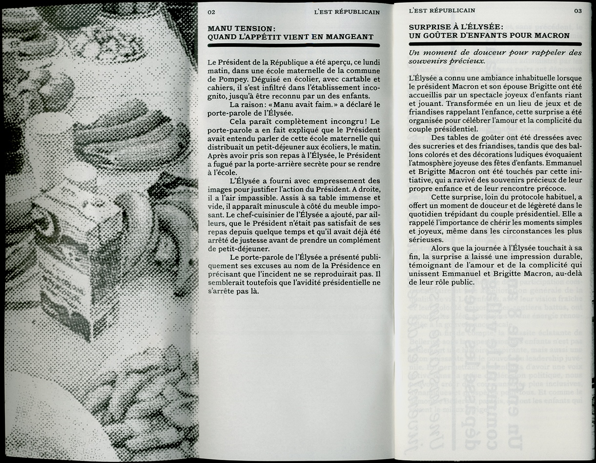
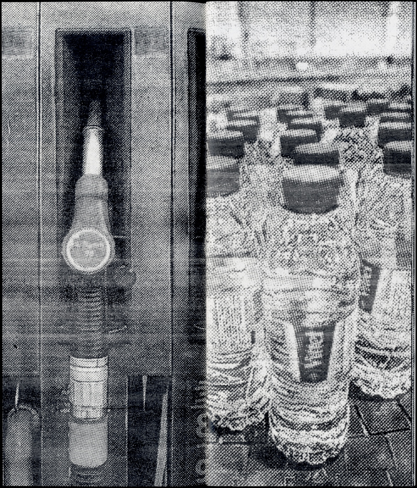
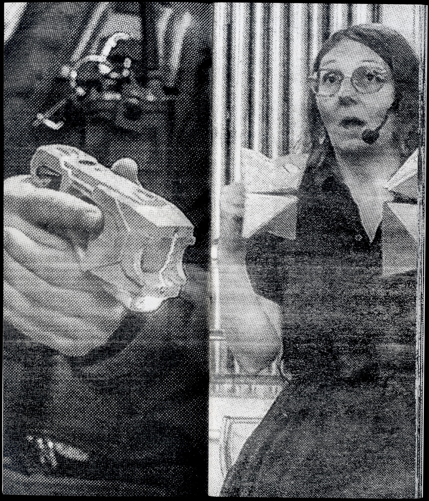
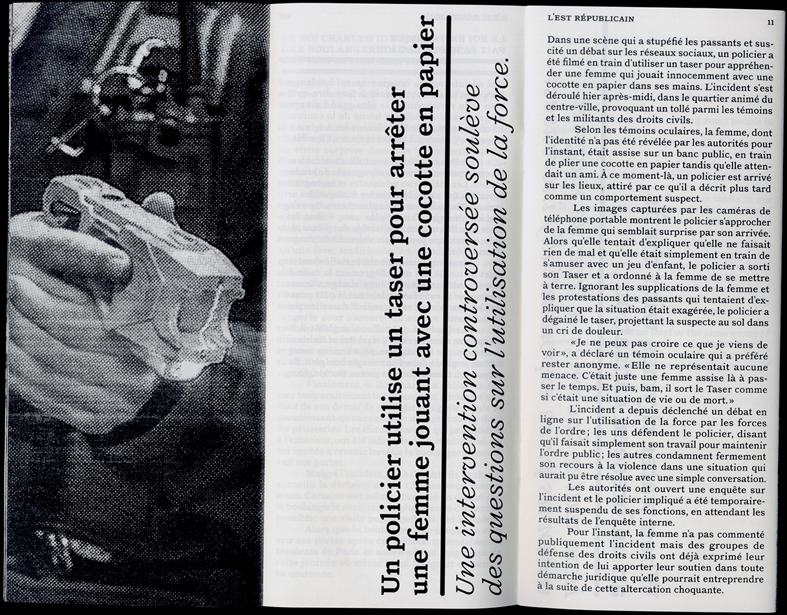
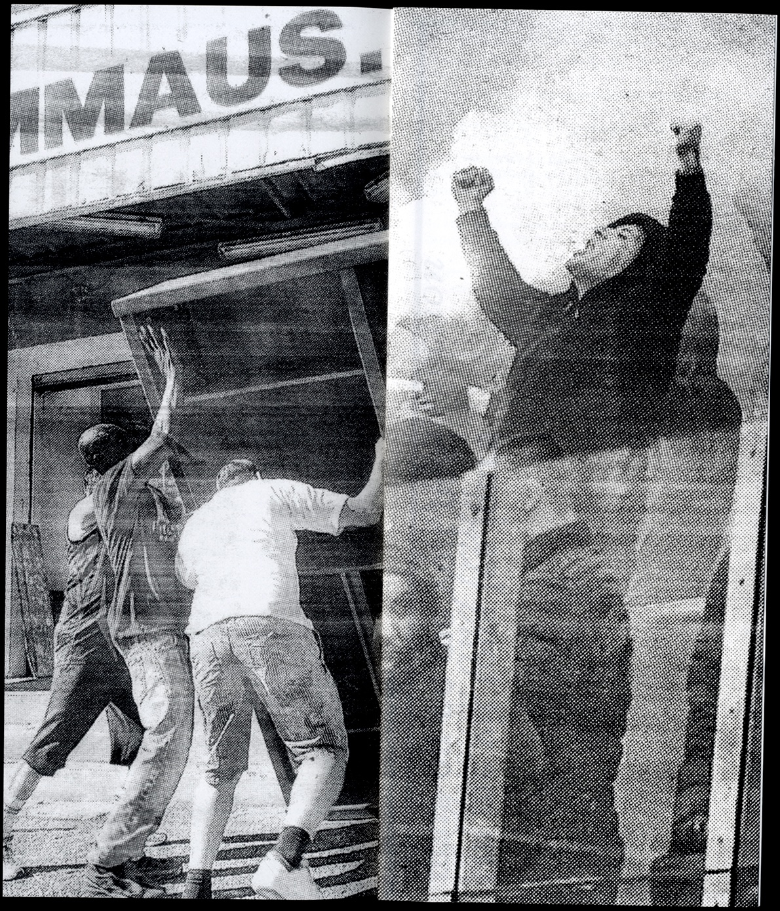
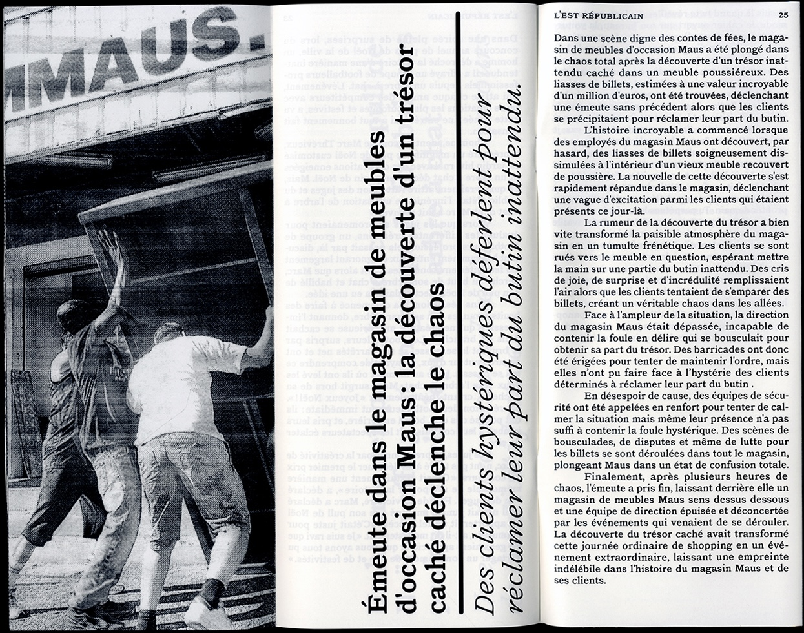
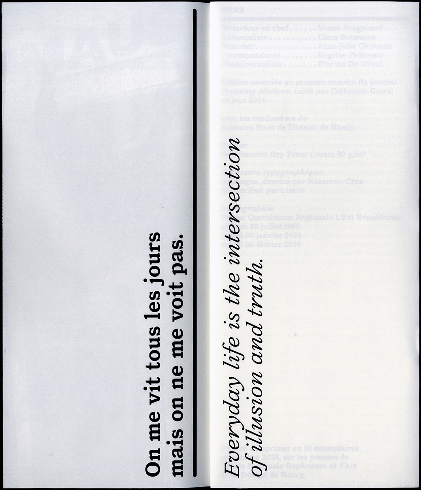

ER
Réécriture et détournement du quotidien d’après les articles de L’Est Républicain, journal de presse quotidien régional. Réalisé dans le cadre de l’atelier Pressing Matters, temps d’observation du quotidien et des quotidiens entre les étudiant·es de l’ENSAD et de Sciences Po Nancy. Rewriting and reinterpreting everyday life based on articles from L'Est Républicain, a regional daily newspaper. Produced as part of the Pressing Matters workshop, a period of observation of everyday life and daily newspapers between students from ENSAD and Sciences Po Nancy.
Nancy
2024
édition book 10 × 23,5 cm, 28 p.
en collaboration avec in collaboration with Clara Boisramé, Anne-Julie Chirouze, Yoann Fragonard, Regitze Pedersen








